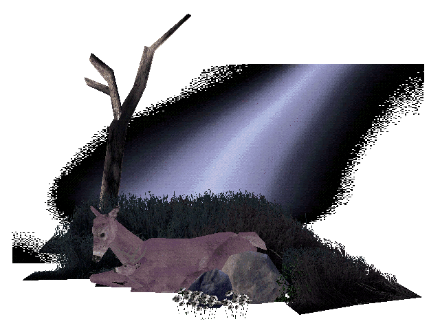
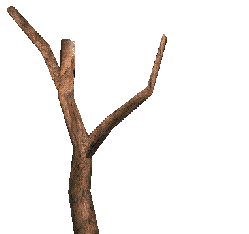
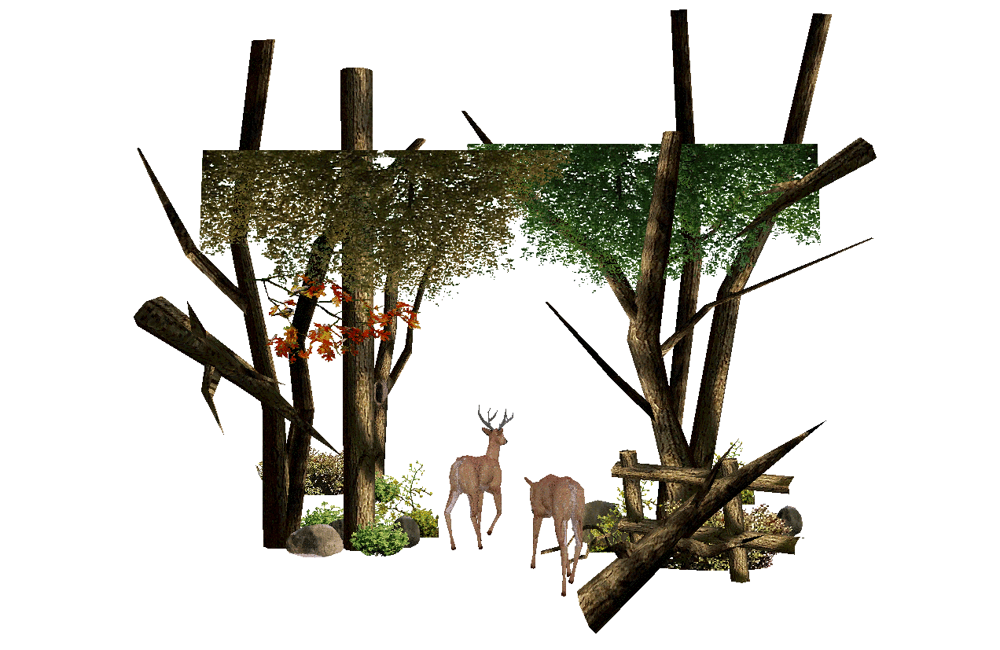

Big Buck Hunter: Restoration
Project Website
What is Big Buck Hunter?
“Big Buck Hunter” is a hunting arcade game released in 2000. The player uses a lightgun - a plastic shotgun with a light sensor in the barrel - to interact with the game, aiming directly at the screen of the arcade cabinet. The player’s goal is shooting and killing bucks (male deer), while avoiding does (female deer, without antlers). The entire gameplay consists of shooting deer, or other animals on bonus rounds, across a fixed number of levels in an outdoor/forest setting. Big Buck Hunter was notably popular - even saving the developers/publishers, “Incredible Technologies”, from bankruptcy at the time. Over time, with multiple releases, it has evolved into almost an entirely different game than it was in 2000. While newer versions of Big Buck Hunter continue to be popular and culturally relevant today, for this project the only version of Big Buck Hunter that is relevant is the first release from 2000.

Big Buck Hunter is a strikingly beautiful game - at least visually. Unlike most arcade games that set themselves in a fantasy world or exaggerated reality, Big Buck Hunter tries to depict the natural world; which gives it the unique potential to glorify creation. However, in an unmodified state it is incurably plagued by violence, the deer only have programmed behavior related to fear or death, and the landscapes in the game are designed carefully to create a ‘shooting challenge’ for the player. In this state, instead of reflecting the full beauty of nature the game reveals our broken relationship with it. The purpose of this project, “Big Buck Hunter: Restoration,” is not to create a new game, but to modify and restore Big Buck Hunter and the game-world inside of it to a pre-fall state, free of violence and death, reflecting the original and ultimate aim of creation: a world of harmony, peace, and communion.
generating landscapes instead of a fixed amount of levels, evoking the eternal quality of life
before the fall. The deer now exhibit restful and peaceful behaviors to correspond with this,
and the deer, turkeys, pheasants, quail, and ducks who would never see each other in the
original game since birds are only present in bonus levels, now exist in the same landscapes
and can interact, restoring the unity of creation. Among these and other smaller changes and
removals, everything is achieved solely with the original game’s assets. New code is written,
and the modification runs on a different game-engine, but no additional 3D models, textures,
or audio assets are introduced—every texture, model, and sound present is painstakingly reverse
engineered from the original game’s hard drive. 
Big Buck Hunter: Restoration is realized by modifying the original arcade cabinet to run the new software. The physical appearance of the cabinet remains unchanged, and the gun, though now inoperative, is still present - to stress that it is not a new game, but a modification/restoration of the original title.
Pages on this website:
Recommended to read in this order